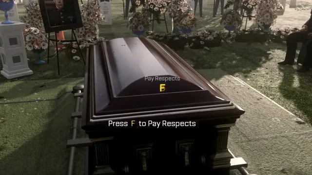
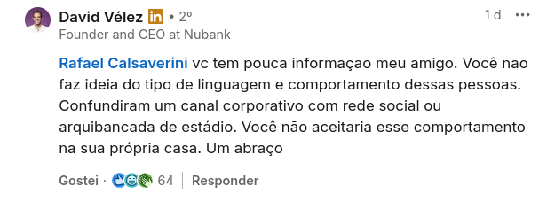

O Híbrido do Nubank
Uma transmissão ao vivo onde o CEO da Nubank anunciou o retorno ao escritório em 2026 acabou com funcionários demitidos e muita indignação. Vamos falar sobre.
Atenção: os trabalhadores do Nubank vão realizar uma plenária sobre no dia 12/11/2025
Agora voltemos ao roteiro
https://international.nubank.com.br/pt-br/companhia/nubank-anuncia-novo-modelo-hibrido-para-2026/
- Tudo começa no dia 06/11/2025. Uma quinta feira.
David Vélez, fundador e CEO do Nubank, compartilhou esta mensagem com os funcionários hoje:
Prezados Nubankers,
Nos últimos cinco anos, o Nubank prosperou em um ambiente prioritariamente remoto. Juntos, construímos uma empresa geracional, alcançando mais de 120 milhões de clientes em toda a América Latina. Esta é uma conquista extraordinária, e cada um de vocês desempenhou um papel para torná-la possível.
Mas, como sempre dizemos, it’s still Day 1. A próxima fase de crescimento acelerado e internalização exigirá aprimoramento em aspectos-chave do nosso ambiente de trabalho para que possamos prosperar. Hoje quero compartilhar uma decisão importante nessa direção: decidimos fazer a transição do nosso modelo prioritariamente remoto para um modelo híbrido. A partir de 1º de julho de 2026, planejamos trazer os Nubankers de volta ao trabalho em equipe presencial, dentro de escritórios vibrantes, começando com 2 dias por semana e, mais adiante, 3 dias por semana em 1º de janeiro de 2027.
- Relatos que chegaram até mim de pessoas que trabalham (ou trabalhavam lá)... e tinha muita gente lá. 7000 pessoas é o que se fala por aí
- O site com o anúncio foi mandado uma hora antes da reunião e na hora fizeram uma apresentação explicando num modelo de live com o CEO Daví. Criaram umas personas para exemplificar: a pessoa tal, que mora no lugar X e que se muda pro lugar Y onde tem uma sede e etc...
- Aparentemente foi pedido que os funcionários expressassem a sua opinião durante a live...
- Então, enquanto a apresentação rolava o chat ficava cada vez mais irritado e debochado. Desde digitar F (uma referência talvez à morte do remoto) até provocações pro CEO ("você vai pegar metrô pra ir trabalhar?")

- E embora o plano descrevesse benefícios, exceções de saúde, os prazos, metas pra cumprir e etc...
- Aparentemente quando foi perguntado: "esse tipo de decisão está apoiada em que tipo de dados?" a resposta foi insatisfatória e houve indignação
O Nubank, uma das maiores plataformas de serviços financeiros digitais do mundo, anuncia hoje que irá implementar um modelo de trabalho híbrido a partir de julho de 2026. Esta decisão segue os últimos cinco anos de um modelo remoto, em que as equipes se reuniam presencialmente pelo menos uma semana a cada trimestre. Neste período, o Nubank cresceu de 59 milhões para 122 milhões de clientes no Brasil, México e Colômbia, atingindo um lucro líquido de US$637 milhões e um faturamento recorde de US$3,7 bilhões no 2º trimestre de 2025.
- O clima já estava pesado por causa da reunião, mas o negócio azedou quando 12 funcionários foram demitidos por justa causa por decorrência dos comentários e milhares receberam advertências
E o sindicato?
Neiva Ribeiro - Presidenta do Sindicato dos Bancários e Financiários de São Paulo
...
O Sindicato exige que as demissões sejam revistas e que a empresa garanta que ninguém seja punido por expressar sua opinião ou protestar diante de uma decisão que o afeta diretamente.
A mesa de negociação entre o Sindicato e o Nubank tem como objetivo assegurar o diálogo e a construção de soluções com a participação dos trabalhadores, valorizando a escuta e o respeito mútuo.
O Sindicato seguirá acompanhando o caso e atuando firmemente na defesa dos direitos, da dignidade e da liberdade de expressão de todos os trabalhadores do setor financeiro.

E os funcionários?
Carta aberta:
https://roxinhosjuntos.github.io/
Lembram do Itaú?
Conclusão
- Eu tenho ouvido muitas análises sobre o porque, mas parece ser o mesmo de sempre:
- Exigir mais 'lealdade' dos que ficam
- Demissão disfarçada
- Investir em prédio
- As empresas podem nos prometer muitas coisas, mas existe um conflito no cerne de tudo: a gente quer trabalhar menos e receber mais e eles querem o contrário
- A empresa não é sua amiga
- Menção honrosa ao ifood e todas outras empresas que estão querendo se promover em cima desse caso
- Encontrem sentido fora do ambiente trabalho!